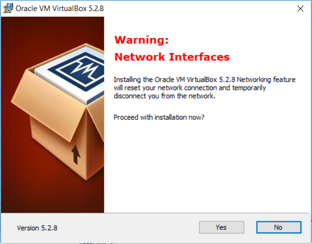
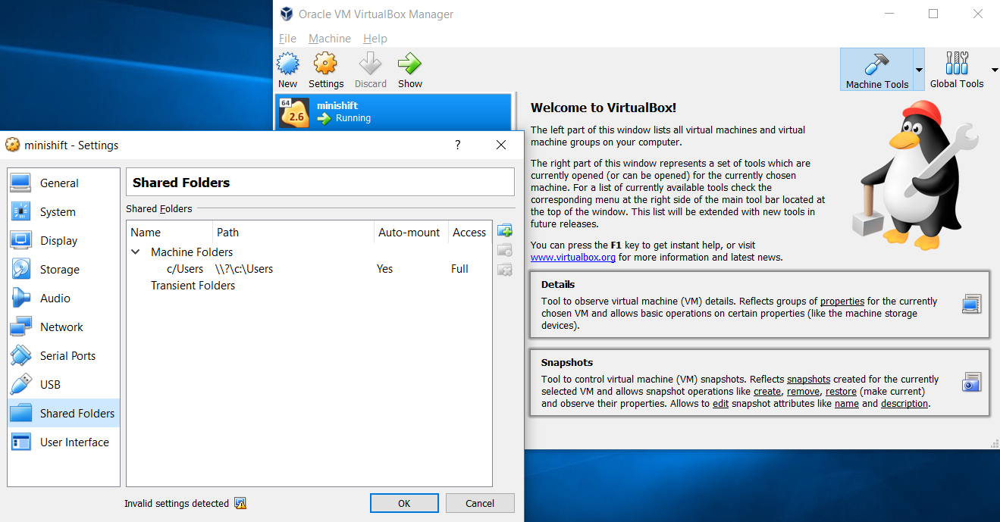
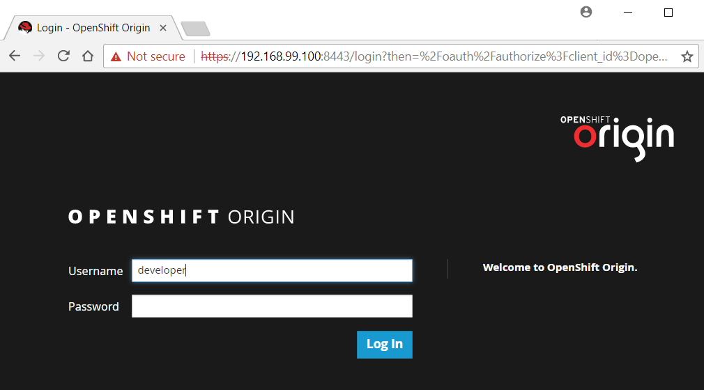
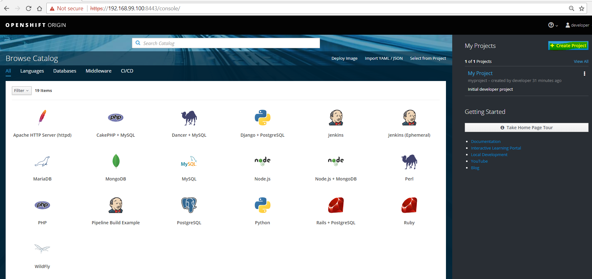

Developing with OpenShift
Posted on April 15, 2018 in DevOp Updated: April 06, 2019
It has become time (for me) to explore OpenShift. OpenShift is a Build and Deployment block using Kubernetes and Docker as deployment target. In other words: It connects GitHub and DockerHub to your cloud provider. It allows you to do do on-premise deployment and to monitor and operate your cloud. In this blog I'll run it (my own little cloud) locally on Windows.
Why OpenShift?
There are four good reasons seen with my dev glasses on:
- OpenShift is my local cloud. I can build it locally and replicate it to a real cloud, when I see it is working as intended.
- I don't have to pay cloud resources for a test envir except for when testers needs it - I'll delete it, when it is not in use.
- Microservices like Redis and MongoDB - I can have it installed inside my OpenShift envir - just by fetching them as containers from DockerHub. Once I know how there'll not be any hassle and I won't be forsed to use SaaS services.
- When you build your OpenShift environment with Ansible it becomes an environment you can deploy to any cloud provider.
Of course there'll be pros and cons depending on your taste and on other requirement, but OpenShift is a great option.
So how to get started with OpenShift?
Which editions (products) are awailbale?
Currently (spring 2018) you get a good helicopter view from the free eBook Deploying to OpenShift - Preface - Online Resources.
From there you'll learn that there are two editions (called products) of OpenShift:
OpenShift Origin- This is the OpenShift repo, that you can also use while doing local dev.OpenShift Container Platform- An Enterprise version aimed for on-premise hosting of your own cloud.
On the OpenShift documentation homepage, you'll learn that there are also two more editions (products):
OpenShift Dedicated- Redhat's managed public cloud edition ofOpenShift Container PlatformOpenShift Online- I think this is like the dedicated edition (single tenant) except that the VMs are not dedicated to only one customer, but are multi tenant.
The latter two editions seems to be clouds hosted by RedHat.
OpenShift is a managed PaaS, that must be deployed to some IaaS explained here - Quote:
The containers you build can be easily deployed on any Red Hat container host or platform, including:
Red Hat Enterprise Linux,Red Hat Enterprise Linux Atomic Host, and our platform-as-a-service solution,OpenShift Container Platform 3.
I think this IaaS stack often will be RedHat OpenStack and probably also is it, when you are using RedHat Enterprise Linux as the container host.
How do I start playing with the toy?
You can locally play with either OpenShift Origin or OpenShift Container Platform.
With OpenShift Origin you have 5 options:
OpenShift Origin Option |
Win/Mac/Lin | ||
|---|---|---|---|
| 1. | Running a VM with Vagrant |
W/M/L | *1 |
| 2. | Running a VM managed by MiniShift |
W/M/L | *1 |
| 3. | Starting a Docker container |
L (Fedora, CentOS, RHEL) | |
| 4. | Downloading the binary |
L | |
| 5. | Running an Ansible playbook |
*1: MiniShift is a newer method for local development than the method used in eBook OpenShift for Developers called Vagrant all-in-one virtual machine.
In eBook DevOps with OpenShift a local all-in-one cluster is started using oc cluster up.
In the table below there are some links provided by OpenShift:
Origin |
Container Platform |
|
|---|---|---|
| Download and Run Openshift locally | MiniShift *1 |
Container Development Kit (CDK) |
| Test Hosted Openshift | Red Hat Test Drive | |
| Install Walkthrough | Container Platform 3.9 | |
| Configure Walkthrough | Container Platform 3.9 | |
Web Console Walkthrough |
Origin 3.9 | Container Platform 3.9 |
CLI Walkthrough |
Origin 3.9 | Container Platform 3.9 |
So there are lots of options to play with it locally. I'll use MiniShift, which seems to be the simplest option.
What is in the box?
Fig 1. When you run the box there will be a REST API enabling you to manage the box (Drawing by James Bucket hosted by levvel.io)

Fig 2. Your code (in docker containers) will be deployed to Kubernetes Pods inside the box (Drawing by James Bucket hosted by levvel.io)

If you compare Fig 2. to a deployment in GCP without OpenShift, then you'll notice that OpenShift takes all the pieces and put them into one box.
So if you build your OpenShift environment (including DBs and other microservices) with Ansible, then you can deploy it to any cloud provider - you environment is now 100% portable.
Fig 3. Continuous Deployment to Kubernetes Engine using Jenkins (Drawing hosted by google.com)

Fig 4. RedHats own picture of OpenShift runtime environment (Drawing by Mike Barret hosted by openshift.com)

Installation
VirtualBox
I am installing on Windows 10.
Openshift needs a hypervisor. There are two options: Hyper-v or VirtualBox.
VirtualBox is the easy one to handle is my experince. It is also an option that can be chosen both on Windows, Linux and Mac.
I have used hypervisors some years ago on my local PC, so I know that I have already enabled Intel Virtualization Technology (also known as Intel VT) in the Bios. It was required for Hyper-v, so I assume it is either beneficial or required for VirtualBox, too.
Notice: Not all PC's comes with Intel VT.
When you have downloaded VirtualBox and start to install it you are told that it will disconnect your network (why did I also just start a long running upload? - I'll abort that for a while)
Fig 5. Your network will disconnect

After restart I had an extra network adapter
ipconfig /all
# output:
# Ethernet adapter VirtualBox Host-Only Network:
# Connection-specific DNS Suffix . :
# Description . . . . . . . . . . . : VirtualBox Host-Only Ethernet Adapter
# IPv4 Address. . . . . . . . . . . : 192.168.56.1(Preferred)
MiniShift
I downloded and unzipped minishift/minishift for Windows.
It could be unzipped to anywhere. I chose C:\Program Files\, so after unzip the MiniShift path was C:\Program Files\minishift-1.15.1-windows-amd64. That path had to be added to the enviroment %path%.
# Verify minishift can be reached from any local path
# Note: On Windows minishift cannot be executed from a network drive
minishift --help
If any issues consult Installing Minishift guide.
Test driving MiniShift
Start and stop
# Optionally Start hypervisor - if you don't start the GUI, it will be started by MiniShift as headless using VBoxHeadless.exe
C:\Program Files\Oracle\VirtualBox\VirtualBox.exe
# Start minishift
minishift start --vm-driver=virtualbox
Output
-- Starting profile 'minishift'
-- Checking if requested OpenShift version 'v3.7.2' is valid ... OK
-- Checking if requested OpenShift version 'v3.7.2' is supported ... OK
-- Checking if requested hypervisor 'virtualbox' is supported on this platform ... OK
-- Checking if VirtualBox is installed ... OK
-- Checking the ISO URL ... OK
-- Downloading OpenShift binary 'oc' version 'v3.7.2'
38.44 MiB / 38.44 MiB [=======================================================================================================================================] 100.00% 0s-- Downloading OpenShift v3.7.2 checksums ... OK
-- Checking if provided oc flags are supported ... OK
-- Starting local OpenShift cluster using 'virtualbox' hypervisor ...
-- Minishift VM will be configured with ...
Memory: 2 GB
vCPUs : 2
Disk size: 20 GB
Downloading ISO 'https://github.com/minishift/minishift-b2d-iso/releases/download/v1.2.0/minishift-b2d.iso'
40.00 MiB / 40.00 MiB [=======================================================================================================================================] 100.00% 0s
-- Starting Minishift VM ...................................... OK
-- Checking for IP address ... OK
-- Checking for nameservers ... OK
-- Checking if external host is reachable from the Minishift VM ...
Pinging 8.8.8.8 ... OK
-- Checking HTTP connectivity from the VM ...
Retrieving http://minishift.io/index.html ... OK
-- Checking if persistent storage volume is mounted ... OK
-- Checking available disk space ... 0% used OK
Importing 'openshift/origin:v3.7.2' . CACHE MISS
Importing 'openshift/origin-docker-registry:v3.7.2' . CACHE MISS
Importing 'openshift/origin-haproxy-router:v3.7.2' . CACHE MISS
-- OpenShift cluster will be configured with ...
Version: v3.7.2
Starting OpenShift using openshift/origin:v3.7.2 ...
Pulling image openshift/origin:v3.7.2
Pulled 1/4 layers, 26% complete
Pulled 2/4 layers, 78% complete
Pulled 3/4 layers, 90% complete
Pulled 4/4 layers, 100% complete
Extracting
Image pull complete
OpenShift server started.
The server is accessible via web console at:
https://192.168.99.100:8443
You are logged in as:
User: developer
Password: <any value>
To login as administrator:
oc login -u system:admin
-- Exporting of OpenShift images is occuring in background process with pid 11256.
>
If your screen looks like above the downloded minishift image wil be cached to
c:\users\youruserid\.minishift\cache\iso\b2d\v1.2.0\
Fig 6. In VirtualBox you'll see the VM running: 
If you have trouble consult Minishift Quickstart and Troubleshooting Minishift.
As you could see from the output you got an url to the Web Console: https://192.168.99.100:8443/ that was shown in Fig 1.
Fig 7. Log in to Minishift web console with user developer and <any key> as psw.

Fig 8. MiniShift Web Console 
OK, we're in. How about turning off?
VirtualBox has following options:
| Action | Keybord shortcut |
|---|---|
| Pause | Ctrl-P |
| Reset | Ctrl-T |
| Close - save state | Ctrl-V |
| ACPI Shutdown | Ctrl-H |
| Power Off | Ctrl-F |
You could accidently power off the VM. No worries - you can just start from scratch with minishift start ... - as before. But MiniShift has a corresponding command for stopping:
minishift stop
Did you notice during stop - the image is a boot2docker - which apparently is what b2d is short for. On their githup page they recommend that on Windows one should rather use Docker For Windows. I wonder if that will be the default image, if you choose hyper-v as hyperviser...
The oc CLI
In Fig 1. you saw three clients for MiniShift: Dev CLI, Adm CLI and Web Console.
I think the Dev and Adm CLI is one and same - just having different roles using it. At least I know that for CLI we have the oc command.
But where is it?
# Start again
minishift start --vm-driver=virtualbox
# What does status print?
minishift status
# Output:
# Minishift: Running
# Profile: minishift
# OpenShift: Running (openshift v3.7.2+5eda3fa-5)
# DiskUsage: 8% of 17.9G
# Print what to exec to add oc to your %path%
minishift oc-env
# Output
# export PATH="C:\Users\youruserid\.minishift\cache\oc\v3.7.2\windows:$PATH"
# Run this command to configure your shell:
# eval $(minishift oc-env)
# Nice - then let's do what it tells us to do. This works at least from the Git bash shell:
eval $(minishift oc-env)
# Did it work?
oc --help
Output:
OpenShift Client
This client helps you develop, build, deploy, and run your applications on any OpenShift or Kubernetes compatible platform. It also includes the administrative commands for managing a cluster under the 'adm' subcommand.
Basic Commands:
types An introduction to concepts and types
login Log in to a server
new-project Request a new project
new-app Create a new application
status Show an overview of the current project
project Switch to another project
projects Display existing projects
explain Documentation of resources
cluster Start and stop OpenShift cluster
Build and Deploy Commands:
rollout Manage a Kubernetes deployment or OpenShift deployment config
rollback Revert part of an application back to a previous deployment
new-build Create a new build configuration
start-build Start a new build
cancel-build Cancel running, pending, or new builds
import-image Imports images from a Docker registry
tag Tag existing images into image streams
Application Management Commands:
get Display one or many resources
describe Show details of a specific resource or group of resources
edit Edit a resource on the server
set Commands that help set specific features on objects
label Update the labels on a resource
annotate Update the annotations on a resource
expose Expose a replicated application as a service or route
delete Delete one or more resources
scale Change the number of pods in a deployment
autoscale Autoscale a deployment config, deployment, replication controller, or replica set
secrets Manage secrets
serviceaccounts Manage service accounts in your project
Troubleshooting and Debugging Commands:
logs Print the logs for a resource
rsh Start a shell session in a pod
rsync Copy files between local filesystem and a pod
port-forward Forward one or more local ports to a pod
debug Launch a new instance of a pod for debugging
exec Execute a command in a container
proxy Run a proxy to the Kubernetes API server
attach Attach to a running container
run Run a particular image on the cluster
cp Copy files and directories to and from containers.
Advanced Commands:
adm Tools for managing a cluster
create Create a resource by filename or stdin
replace Replace a resource by filename or stdin
apply Apply a configuration to a resource by filename or stdin
patch Update field(s) of a resource using strategic merge patch
process Process a template into list of resources
export Export resources so they can be used elsewhere
extract Extract secrets or config maps to disk
idle Idle scalable resources
observe Observe changes to resources and react to them (experimental)
policy Manage authorization policy
auth Inspect authorization
convert Convert config files between different API versions
import Commands that import applications
image Useful commands for managing images
Settings Commands:
logout End the current server session
config Change configuration files for the client
whoami Return information about the current session
completion Output shell completion code for the specified shell (bash or zsh)
Other Commands:
help Help about any command
plugin Runs a command-line plugin
version Display client and server versions
Use "oc <command> --help" for more information about a given command.
Use "oc options" for a list of global command-line options (applies to all commands).
If you save (or download) the following to C:\Program Files\minishift-1.15.1-windows-amd64\shiftcli.sh, then you can start your minishift from Git Bash with shiftcli.sh
#!/bin/bash
#shiftcli.sh
# Start a VM and start an OpenShift Cluster inside the VM
minishift start --vm-driver=virtualbox
minishift status
# Enable oc - the CLI
eval $(minishift oc-env)
# print oc cmds, if you prefer CLI to the Web Console
oc --help
# optionally start Web Console if you like that better than the CLI
start chrome https://192.168.99.100:8443/
echo "minishift stop #when done"
Tip: There is a desktop k8s clustermanager called Kubernetic - Details: docs.kubernetic
Next: Deploying to MiniShift
... to be continued in Part 2
Links
References
- MiniShift - Command Reference
- oc CLI Reference
- apb CLI - Ansible Playbook Bundle Development Guide
- Downloads | Red Hat Developer Program
Getting Started
- OpenShift Blog
- OpenShift Commons - a community
- OpenShift Events
- Free eBook 1: OpenShift for Developers (2016)
- Free eBook 2: DevOps with OpenShift (2017)
- Free eBook 3: Deploying to OpenShift (2018)
- Free eBook 4: Transitioning to .NET Core on Red Hat Enterprise Linux (2016)
- More eBooks: Search Results Red Hat Developers
- Cheat Sheet: Red Hat OpenShift Container Platform
- Cheat Sheet: .NET Core 2.0 on Red Hat Enterprise Linux
- More Cheat Sheets: Search Results Red Hat Developers
- OpenShift: Interactive Learning Portal
- Above is based on Katacoda - Interactive Learning Platform
- Install OpenShift in a container with Weave Footloose
- Old Cloud landscape anno 2013 - from my old blog.
The End